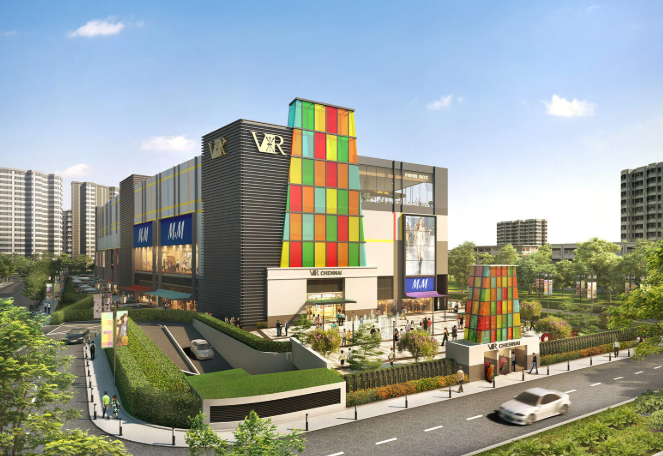

VR
Mall

🛍️ Shopping
Home to more than 240 retail outlets, VR Chennai features a mix of international and national brands across fashion, electronics, and lifestyle categories. Notable stores include Zara, H&M, and Apple, providing a diverse shopping experience for visitors.
🍽️ Dining
The mall boasts a wide array of dining options, from fast food to fine dining. Highlights include the first Taco Bell in Chennai, along with other popular eateries like KFC, Starbucks, and Marhaba, catering to various culinary preferences.
UPto75
🎬 Entertainment
Entertainment at VR Chennai is anchored by a 10-screen PVR ICON multiplex, featuring Gold Class and IMAX formats for an enhanced movie-watching experience.
VR Chennai
Additionally, the mall offers a rooftop tennis court, swimming pool, and a fitness center for recreational activities.
🎮 Family Fun
For families, VR Chennai provides engaging attractions like Fun City, an indoor play area designed for children aged 2-13, and Timezone, an arcade offering a variety of games.
🧘♀️ Wellness & Co-working
Visitors can unwind at Bounce Salon & Spa, located on the first floor, offering services like manicures, pedicures, and spa treatments.
LBB
The Hive, a co-working space within the mall, caters to entrepreneurs and freelancers seeking a productive environment.
LBB
🎉 Events & Community
VR Chennai hosts a variety of events, including live music performances on weekends and a farmer's market every Sunday from 10 am to 7 pm, fostering a vibrant community atmosphere.
🏛️ Architectural Highlights
The mall's design draws inspiration from South Indian temple architecture, featuring elements like gopurams, pillared mandapams, and murals depicting the Dashavatara.
VR Chennai.